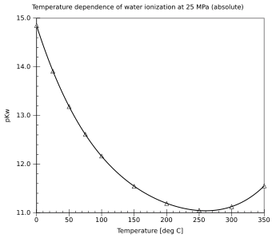
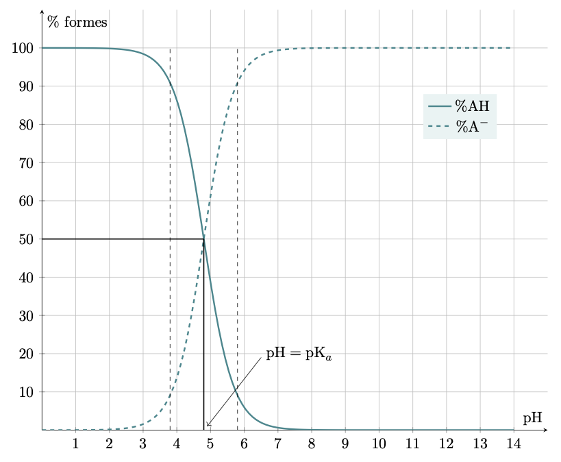
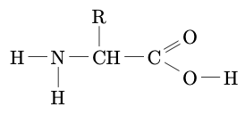
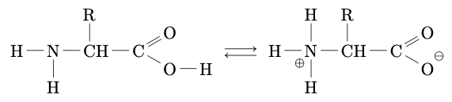
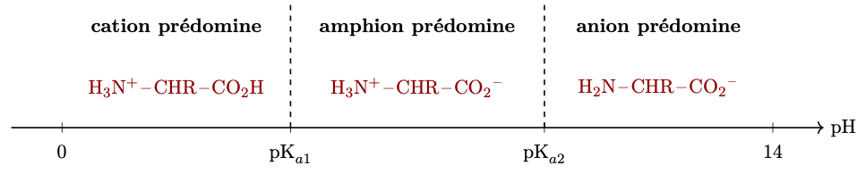

Dans un précédent chapitre les acides et les bases ont été introduits. Il a été montré que leur réaction avec l’eau pouvait conduire à des transformations limitées ou totales. L’évolution du pH lors d’un titrage acide-base a aussi été montrée.
Dans ce chapitre, on introduit les outils qui permettent de comparer entre eux les acides (ou les bases), ou qui permettent d’effectuer le bilan quantitatif des entités présentes en solution.
Produit ionique de l’eau
Réaction d’autoprotolyse de l’eau
Constatations expérimentales
Conductivité de l’eau liquide
-
Lorsqu’on essaie de vérifier, dans un laboratoire spécialisé et équipé d’un matériel très sensible, s’il est possible de faire circuler un courant électrique dans un volume d’eau pure, on constate qu’un très faible courant électrique circule.
-
À 25 °C, le pH de l’eau pure est égal à 7,0.
- À quelle conclusion doit nous mener la première remarque du document ?
Réponse
L’eau pure n’est donc pas uniquement composée de molécules d’eau mais aussi d’ions.
- À quelle conclusion doit nous mener la seconde remarque du document ?
Réponse
Parmi les ions présents dans l’eau pure, il existe des ions oxonium à la concentration : $[{\ce{H3O+}}] = \pu{1,0e-7 mol.L-1}$.
Comment expliquer la présence des ions oxonium dans de l’eau pure ?
- Formuler une hypothèse qui pourrait justifier les constations du document 1.
Réponse
La polarisation des liaisons et la présence des doublets d’électrons non liants au niveau de l’atome d’une molécule d’eau permettent d’imaginer que, sous l’effet d’interactions électriques, certaines molécules d’eau s’ionisent selon la réaction d’équation : $$\ce{H2O + H2O <=> H3O+ + OH- (aq)}$$
Autoprotolyse de l’eau
La réaction chimique d’équation $$\ce{H2O + H2O <=> H3O+ + OH- (aq)}$$ est appelée autoprotolyse de l’eau.
On remarque que la réaction d’autoprotolyse de l’eau impose $[\ce{H3O+}] = [\ce{HO-}]$ dans l’eau.
Avancement final de la réaction d’autoprotolyse de l’eau
- Calculer la quantité de matière d’eau dans le volume $V$.
Réponse
$n(\ce{H2O}) = \dfrac{m(\ce{H2O})}{M(\ce{H2O})} = \dfrac{\pu{1,00E3 g}}{\pu{18,0 g.mol-1}} = \pu{55,6 mol}$.
- Déterminer l’avancement final de la transformation modélisée par la réaction d’autoprotolyse de l’eau.
Réponse
- Avancement final $x_f$ est tel que $n_f(\ce{H3O+}) = x_f$. On $n_f(\ce{H3O+}) = V \, [\ce{H3O+}] = \pu{1,0e-7 mol}$.
- Le système chimique est-il réellement modifié par la cette réaction ?
Réponse
-
Avancement maximal $x_{max}$ est tel qu’il n’y a plus d’eau dans l’état final. Donc $x_{max} = \pu{55,6 mol}$ ;
-
$\tau = \dfrac{x_f}{x_{max}} = \dfrac{\pu{1,0e-7 mol}}{\pu{55,6 mol}} = \pu{1,8e-9}$.
L’avancement de la réaction est tellement petit que l’on peut considérer que le système n’évolue pas. Un litre d’eau contient… de l’eau !!!
Produit ionique de l’eau
- Rappel
- On peut attacher à toute réaction chimique conduisant à un état d’équilibre une constante, appelée constante d’équilibre, égale au quotient de cette réaction dans l’état d’équilibre.
Remarques
-
On définit, par commodité et par analogie avec l’expression du pH, la grandeur : $$\text{pK}_e= - \log K_e \qquad \text{ou} \qquad K_e = 10^{-\text{pK}_e}$$
-
Comme pour toutes les constantes d’équilibre, la valeur du produit ionique de l’eau dépend de la température.
À 25 °C, $K_e = \dfrac{\pu{1,0e-7 mol.L-1} \times \pu{1,0e-7 mol.L-1}}{(\pu{1,0 mol.L-1})^2} = \pu{1,0e-14}$
donc $\text{pK}_e = 14,0$.
Dépendance du produit ionique de l’eau avec la température (wikipedia) 
Dans toute solution aqueuse, la réaction d’autoprotolyse de l’eau impose :
- la présence d’ions oxonium et d’ions hydroxyde ;
- la relation $K_e = \dfrac{[\ce{H3O+}] \cdot [\ce{HO-}]}{C^{o2}}$.
- Exprimer la relation qui existe entre le pH et la concentration en ions hydroxyde.
Réponse
$$\text{pH} = \text{pK}_e + \log \left( \dfrac{[ \ce{HO^-}]_{(eq)}}{C^o} \right) \text{ ou } [ \ce{HO^-}]_{(eq)} = C^o \, 10^{(\text{pH} - \text{pK}_e)}$$
pH des solutions neutre, acide et basique
- Une solution neutre est définie par $[\ce{H3O+}] = [\ce{HO-}]$. En déduire la valeur du pH d’une solution neutre.
Réponse
$$[\ce{H3O+}] = [\ce{HO-}] \iff [\ce{H3O+}] = \dfrac{K_e \, C^{o2}}{[\ce{H3O+}]} \iff \dfrac{[\ce{H3O+}]^2}{C^{o2}} = K_e$$ Donc $ - \log \left( \dfrac{[\ce{H3O+}]^2}{C^{o2}} \right) = - \log K_e$ ou
$$ \text{pH} = \dfrac{1}{2}\, \text{pK}_e$$
- Une solution acide est définie par $[\ce{H3O+}] > [\ce{HO-}]$. En déduire la valeur du pH d’une solution neutre.
Réponse
De la même façon, on montre que $$ \text{pH} < \dfrac{1}{2}\, \text{pK}_e$$
- Une solution basique est définie par $[\ce{H3O+}] < [\ce{HO-}]$. En déduire la valeur du pH d’une solution neutre.
Réponse
De la même façon, on montre que $$ \text{pH} > \dfrac{1}{2}\, \text{pK}_e$$
- Remarque :
-
Les limites supérieure et inférieure du pH en solution aqueuse seront démontrées un peu plus loin dans ce document.
Constante d’acidité $K_a$
Définition
Remarques
-
On définit, par commodité et par analogie avec l’expression du pH, la grandeur : $$ \text{pK}_a = -\log K_a \qquad \text{ou} \qquad K_a = 10^{-\text{pK}_a} $$
-
Comme pour toutes les constantes d’équilibre, la valeur du produit ionique de l’eau dépend de la température.
Relation entre $pK_a$ et $\text{pH}$
- Établir la relation qui existe entre les grandeurs $pK_a$ et $\text{pH}$.
Réponse
$$ K_a = \dfrac{[ \ce{A-}]_{(eq)} \cdot [ \ce{H3O+} ]_{(eq)}}{[ \ce{AH}]_{(eq)} \cdot C^o} \iff - \log K_a = -\log \left( \dfrac{[ \ce{A-}]_{(eq)} \cdot [ \ce{H3O+} ]_{(eq)}}{[ \ce{AH}]_{(eq)} \cdot C^o} \right) $$ or $$ -\log \left( \dfrac{[ \ce{A-}]_{(eq)} \cdot [ \ce{H3O+} ]_{(eq)}}{[ \ce{AH}]_{(eq)} \cdot C^o} \right) = -\log \left( \dfrac{[ \ce{A-}]_{(eq)} }{[ \ce{AH}]_{(eq)} } \right) - log \left( \dfrac{[ \ce{H3O+} ]_{(eq)}}{C^o} \right) $$ donc $$ \text{pK}_a = \text{pH} -\log \left( \dfrac{[ \ce{A-}]_{(eq)} }{[ \ce{AH}]_{(eq)} } \right) $$
Constantes d’acidité des couples de l’eau
- Déterminer la valeur de la constante d’acidité du couple $\ce{H3O+/H2O}$.
Réponse
Réaction de l’acide du couple avec l’eau : $$ \ce{H3O+ + H2O <=> H2O + H3O+} $$ donc $K = \pu{1,0}$.
- Déterminer la valeur de la constante d’acidité du couple $\ce{H2O/HO-}$.
Réponse
Réaction de l’acide du couple avec l’eau : $$ \ce{H2O + H2O <=> OH- + H3O+} $$ donc $K = K_e$.
-
L’introduction d’un acide fort en solution aqueuse entrainant sa transformation totale en sa base conjuguée et en ions oxonium, l’ion oxonium $\ce{H3O+}$ est l’acide le plus fort qui puisse exister dans l’eau.
L’échelle des $\text{pK}_a$ a pour valeur inférieure 0. -
L’introduction d’une base forte en solution aqueuse entraînant sa transformation totale en son acide conjugué et en ions hydroxyde, l’ion hydroxyde $\ce{HO^-}$ est la base la plus forte qui puisse exister dans l’eau.
L’échelle des $\text{pK}_a$ a pour valeur supérieure $K_e$, soit 14,0.
Diagrammes de prédominance et de distribution
Diagrammes de prédominance
Espèce chimique prédominante
Lorsqu’on compare deux espèces chimiques, on dit que celle qui présente la plus grande concentration molaire est prédominante.
- Montrer que si le pH d’une solution est égal au $\text{pK}_a$ d’un couple acide/base $\ce{AH/A-}$ présent dans la solution, alors $[\ce{AH}] = [\ce{A-}]$.
Réponse
-
$\text{pH} = \text{pK}_a + \log \left( \dfrac{[ \ce{A-}]_{(eq)} }{[ \ce{AH}]_{(eq)} } \right)$
-
Si $\text{pH} = \text{pK}_a$ alors $\log \left( \dfrac{[ \ce{A-}]_{(eq)} }{[ \ce{AH}]_{(eq)} } \right) = 0$ et donc $\dfrac{[ \ce{A-}]_{(eq)} }{[ \ce{AH}]_{(eq)} } = 1$.
-
Finalement $[ \ce{A-}]_{(eq)} = [ \ce{AH}]_{(eq)}$.
- Montrer que si le pH d’une solution est tel que $\text{pH} < \text{pK}_a$ avec $K_a$ la constante d’acidité d’un couple acide/base $\ce{AH/A-}$ présent dans la solution, alors $[\ce{AH}] > [\ce{A-}]$.
Réponse
-
$\text{pH} = \text{pK}_a + \log \left( \dfrac{[ \ce{A-}]_{(eq)} }{[ \ce{AH}]_{(eq)} } \right)$
-
Si $\text{pH} < \text{pK}_a$ alors $\log \left( \dfrac{[ \ce{A-}]_{(eq)} }{[ \ce{AH}]_{(eq)} } \right) < 0$ et, comme la fonction logarithme est croissante et prend la valeur 0 en 1, $\dfrac{[ \ce{A-}]_{(eq)} }{[ \ce{AH}]_{(eq)} } < 1$.
-
Finalement $[ \ce{A-}]_{(eq)} < [ \ce{AH}]_{(eq)}$.
- Montrer que si le pH d’une solution est tel que $\text{pH} > \text{pK}_a$ avec $K_a$ la constante d’acidité d’un couple acide/base $\ce{AH/A-}$ présent dans la solution, alors $[\ce{AH}] < [\ce{A-}]$.
Réponse
-
$\text{pH} = \text{pK}_a + \log \left( \dfrac{[ \ce{A-}]_{(eq)} }{[ \ce{AH}]_{(eq)} } \right)$
-
Si $\text{pH} > \text{pK}_a$ alors $\log \left( \dfrac{[ \ce{A-}]_{(eq)} }{[ \ce{AH}]_{(eq)} } \right) > 0$ et, comme la fonction logarithme est croissante et prend la valeur 0 en 1, $\dfrac{[ \ce{A-}]_{(eq)} }{[ \ce{AH}]_{(eq)} } > 1$.
-
Finalement $[ \ce{A-}]_{(eq)} > [ \ce{AH}]_{(eq)}$.
Concentrations des formes acide et basique d’un couple en fonction du pH
Le relation $\text{pH} = \text{pK}_a + \log \left( \dfrac{[ \ce{A-}]_{(eq)} }{[ \ce{AH}]_{(eq)} } \right)$, caractéristique du couple $\ce{AH/A^-}$, permet de vérifier que :
-
si $\text{pH} = \text{pK}_a$ alors $[\ce{AH}] = [\ce{A^-}]$.
La forme acide et la forme basique du couple ont la même concentration. -
si $\text{pH} < \text{pK}_a$ alors $[\ce{AH}] > [\ce{A^-}]$.
La forme acide du couple est prédominante.Le domaine de pH défini par $\text{pH} < \text{pK}_a$ est le domaine de prédominance de la forme acide du couple.
-
si $\text{pH} > \text{pK}_a$ alors $[\ce{AH}] < [\ce{A^-}]$.
La forme basique du couple est prédominante.Le domaine de pH défini par $\text{pH} > \text{pK}_a$ est le domaine de prédominance de la forme basique du couple.
Remarque
-
Si $\text{pK}_a < \text{pH} < \dfrac{1}{2}\, \text{pK}_e$, la forme basique du couple prédomine alors que la solution est acide !
-
De même, si $\dfrac{1}{2}\, \text{pK}_e < \text{pH} < \text{pK}_a$, la forme acide du couple prédomine alors que la solution est basique.
Diagrammes de distribution des formes acide et basique
Le lait contient, entre autres, de l’acide lactique $\ce{CH3-CHOH-CO2H}$, noté $\ce{HA}$, et l’ion lactate $\ce{CH3-CHOH-CO2-}$, noté $\ce{A-}$. La constante d’acidité du couple est égale à $K_a = \pu{1,3e-4}$.
Un lait a un pH égal à 6,5.
-
Déterminer parmi ces deux espèces, l’espèce prédominante dans ce lait.
-
Calculer le rapport des concentrations en ions lactate et en acide lactique, puis conclure.
Réponses
-
Le $\text{pK}_a$ du couple vaut : $\text{pK}_a = -\log K_a = \pu{3,9}$. Comme $\text{pH} > \text{pK}_a$, l’espèce chimique prédominante est $\ce{CH3-CHOH-CO2-}$, la forme basique du couple.
-
$$ K_a = \dfrac{[\ce{A-}]_{eq} \cdot [\ce{H3O+}]_{eq}}{[\ce{AH}]_{eq} \cdot C^o} \iff \dfrac{[\ce{A-}]_{eq}}{[\ce{AH}]_{eq}} = \dfrac{K_a \cdot C^o}{[\ce{H3O+}]_{eq}} $$ À partir de la définition du pH, on peut écrire $$ \dfrac{[\ce{A-}]_{eq}}{[\ce{AH}]_{eq}} = \dfrac{\pu{1,3e-4} \times \pu{1,0 mol.L-1}}{10^{-6,5}} = \pu{4,1e2} $$ On a bien confirmation que l’espèce qui prédomine est la forme basique du couple.
Les indicateurs colorés
- Déterminer la relation qui existe entre le pH et le $\text{pK}_a$ d’un couple lorsque $[\ce{AH}] > 10\, [\ce{A-}]$.
Réponse
Si $[\ce{AH}] > 10\, [\ce{A-}]$, $\dfrac{[\ce{A-}]}{[\ce{AH}]} < 10^{-1}$ et $\text{pH} < \text{pK}_a + \log{10^{-1}} \iff \text{pH} < \text{pK}_a -1$.
- De même, déterminer la relation qui existe entre le pH et le $\text{pK}_a$ d’un couple lorsque $[\ce{A-}] > 10\, [\ce{AH}]$.
Réponse
Si $[\ce{A-}] > 10\, [\ce{AH}]$, $\dfrac{[\ce{A-}]}{[\ce{AH}]} > 10^{1}$ et $\text{pH} > \text{pK}_a + \log{10^{1}} \iff \text{pH} > \text{pK}_a + 1$.
Zones de virage, teinte sensible
-
Pour $\text{pH} < \text{pK}_a -1$ l’indicateur coloré a sa teinte acide.
-
Pour $\text{pH} > \text{pK}_a +1$ l’indicateur coloré a sa teinte basique.
-
Dans la zone de pH comprise entre $\text{pK}_a -1$ et $\text{pK}_a +1$, l’indicateur présente sa teinte sensible, résultat de la superposition de ses teintes acide et basique. Cette zone est appelée zone de virage de l’indicateur.
On verse dans deux béchers, $A$ et $B$, deux volumes identiques de solution d’eau de Javel diluée.
Pour réaliser un encadrement de la valeur du pH de cette solution, on ajoute dans le bécher $A$ quelques gouttes de bleu de bromothymol et dans le bécher $B$ quelques gouttes de phénolphtaléine.
La solution du bécher $A$ se colore en bleu, celle du bécher $B$ reste incolore.
-
Déterminer l’encadrement de la valeur du pH de l’eau de Javel en utilisant les zones de virage.
-
L’eau de Javel contient, entre autres, de l’acide hypochloreux $\ce{HClO}$ et des ions hypochlorite $\ce{ClO-}$.
Proposer un encadrement du rapport des concentrations des espèces $\ce{ClO-}$ et $\ce{HClO}$.
- Données
- $\text{pK}_a (\ce{HClO/ClO-}) = \pu{7,3}$.
- BBT :
- forme acide : jaune si $\text{pH} < \pu{6,0}$
- forme basique : bleu si $\text{pH} > \pu{7,6}$
- phénolphtaléine :
- forme acide : incolore si $\text{pH} < \pu{8,2}$
- forme basique : fuschia si $\text{pH} > \pu{10,0}$
Réponses
-
- La solution contenue dans le bécher $A$ est bleue, donc $\text{pH} > \pu{7,6}$.
- La solution contenue dans le bécher $B$ est incolore, donc $\text{pH} < \pu{8,2}$. Finalement $$\pu{7,6} < \text{pH} < \pu{8,2}$$
-
La relation $\text{pH} = \text{pK}_a + \log \left( \dfrac{[\ce{ClO-}]}{[\ce{HClO}]} \right)$ conduit à $$ \log \left( \dfrac{[\ce{ClO-}]}{[\ce{HClO}]} \right) = \text{pH} - \text{pK}_a $$ soit $$ \dfrac{[\ce{ClO-}]}{[\ce{HClO}]} = 10^{\text{pH} - \text{pK}_a} $$ D’un point de vue numérique, $$ 10^{\pu{7,6} - \pu{7,3}} < \dfrac{[\ce{ClO-}]}{[\ce{HClO}]} < 10^{\pu{8,2} - \pu{7,3}} $$ $$ \pu{2,0} < \dfrac{[\ce{ClO-}]}{[\ce{HClO}]} < \pu{8,0} $$
Acides $\alpha$-aminés
Définitions
Acide aminé
Un acide aminé est un acide carboxylique qui possède également un groupe fonctionnel amine. De tels composés organiques ont donc à la fois un groupe carboxyle et un groupe amine, par exemple une amine primaire ou une amine secondaire . On connaît environ 500 acides aminés, dont environ 140 sont présents dans les protéines. Ces acides aminés peuvent être classés de nombreuses manières différentes : on les classe ainsi souvent en fonction de la position du groupe amine par rapport au groupe carboxyle en distinguant par exemple les acides $\alpha$-aminés, $\beta$-aminés, $\gamma$-aminés ou $\delta$-aminés.
Acide $\alpha$-aminé
Un acide aminé est dit $\alpha$-aminé si le groupe amine est porté par l’atome de carbone voisin de celui qui porte le groupe carboxyle . La formule générale d’un acide $\alpha$-aminé est donc : 
Amphions, Zwitterions
En solution aqueuse, un acide $\alpha$-aminé existe essentiellement sous la forme d’ions dipolaires appelés amphions et zwitterions.
Un amphion résulte du transfert interne d’un proton du groupe carboxyle vers le groupe amine d’une acide $\alpha$-aminé. Ce transfert est une réaction acido-basique intramoléculaire.
Couples acide/base
Couples acide/base
L’amphion est un ampholyte. En solution aqueuse, il peut être considéré comme :
-
L’acide du couple amphion/anion : $$\ce{H_3N^+-CHR-CO_2^-} = \ce{H_2N-CHR-CO_2^-} + \ce{H^+}$$
-
La base du couple cation/amphion : $$\ce{H_3N^+-CHR-CO_2H} = \ce{H_3N^+-CHR-CO_2^-} + \ce{H^+}$$
Diagramme de prédominance
Effets thermiques lors du mélange d’un acide et d’une base
-
On mélange $\pu{0,1 mol}$ d’une solution d’acide chlorhydrique ($V_a = \pu{50 mL}$) et $\pu{0,1 mol}$ d’une solution de soude ($V_b = \pu{50 mL}$). On observe que la température s’élève d’environ $\pu{10 °C}$.
-
Par contre, si on mélange $\pu{0,1 mol}$ d’une solution d’acide chlorhydrique ($V_a = \pu{50 mL}$) et $\pu{50 mL}$ d’eau, l’élévation de température est très faible.
-
Il en est de même si on remplace la solution d’acide chlorhydrique par une solution de soude dans cette dernière expérience.
Réaction entre un acide fort et une base forte
Le mélange d’un acide fort et d’une base forte dans une solution conduit à une transformation chimique totale modélisée par la réaction chimique d’équation : $$ \ce{H3O^+ + HO- (aq) –> 2 H2O (l)} $$ Cette réaction est exothermique.
- Il faut toujours prendre beaucoup de précautions lorsqu’on mélange des solutions concentrées de base et d’acides forts.
- Un mélange trop rapide peut conduire à une ébullition locale et donc à des projections. Il ne faut donc jamais verser brutalement d’eau dans un acide fort concentré, les projections étant alors acides !
Solution tampon
Solution tampon
On appelle solution tampon une solution dont le pH varie peu, par addition d’un acide, d’une base ou par dilution.
Les solutions tampons sont utilisées lorsqu’une réaction chimique susceptible de libérer ou de consommer des protons doit se faire à un pH sensiblement constant. Il en est souvent ainsi en biologie : les cellules, les enzymes ne peuvent exister que dans une zone de pH bien déterminée (1,5 pour la peptase de l’estomac, 6,5 pour l’amylase de la salive, 7,4 pour le pH du sang).
Remarque
Nous utilisons des solutions tampons pour étalonner les pH-mètres.
Réalisation d’une solution tampon
On peut montrer que les solutions constituées d’un mélange équimolaire (ou de proportions voisines) d’un acide faible et de sa base conjuguée constitue une solution tampon (il faut bien évidemment que l’ajout d’acide, de base ou la dilution restent modérés).
Ainsi, pour $\text{pH} = \pu{4,8}$, on utilise le couple $\ce{CH3CO2H/CH3CO2^-}$, pour $\text{pH} = \pu{9,2}$, le couple $\ce{NH4^+/NH_3}$, pour $\text{pH} = \pu{7,2}$, le couple $\ce{H2PO4^-/HPO4^{2-}}$, etc.